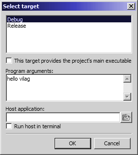

Labor, 13. hét: állapotgépek
Czirkos Zoltán, Pohl László · 2019.08.24.
Állapotgépek. Szabványos bemenet és kimenet átirányítása. Fájlkezelés beépítése. Parancssorgi argumentumok.
Felkészülés a laborra:
- Az állapotgépekről szóló előadás átismétlése.
- A fájlkezelésről tanultak átolvasása.
Alább az előadás állapotgépes példakódját látod, az ly-számlálót.
#include <stdio.h>
int main(void) {
typedef enum LyAllapot {
alap, l_volt, ll_volt
} LyAllapot;
LyAllapot all;
int szaml, c;
szaml = 0;
all = alap;
while ((c = getchar()) != EOF) {
switch (all) {
case alap:
if (c == 'l') all = l_volt;
break;
case l_volt:
switch (c) {
case 'l': all = ll_volt; break;
case 'y': szaml += 1; all = alap; break;
default: all = alap; break;
}
break;
case ll_volt:
switch (c) {
case 'l': break;
case 'y': szaml += 2; all = alap; break;
default: all = alap; break;
}
break;
}
}
printf("%d darab volt.\n", szaml);
return 0;
}Ha esetleg nem tetszik a forráskód tördelése, bátran alakítsd át!
Rajzold meg a forráskód alapján állapotátmeneti és tevékenységeket tartalmazó táblázatát, vagy választásod szerint az állapotátmeneti gráfot!
Megoldás
| l | y | egyéb | |
|---|---|---|---|
| alap | →l_volt | - | - |
| l_volt | →ll_volt | sz+=1, →alap | →alap |
| ll_volt | - | sz+=2, →alap | →alap |
Indulj ki az előző feladat kódjából!
Rajzolj egy új táblázatot, amelyben teljes egészében módosítod a tevékenységeket. Az új program feladata nem az
ly-ok számlálása, hanem egy „hejesírásreform” végrehajtása. Ennek a beolvasott szöveget majdnem változatlanul
kell kiírnia a kimenetre – azzal a különbséggel, hogy az ly-ok helyett j-t, a dupla
lly-ok helyett jj-t kell kiírnia. Pl. lyuk→juk, gally→gajj, viszont
majom→majom marad, és a kulcs, illetve a hallgat szavak is változatlanok maradnak. (Ezek a
példák fontos állapotátmeneteket és tevékenységeket tesztelnek.)
Megoldás
| l | y | egyéb | |
|---|---|---|---|
| alap | →l_volt | ki: c | ki: c |
| l_volt | →ll_volt | ki: "j" →alap | ki: "l", c →alap |
| ll_volt | ki: "l" | ki: "jj" →alap | ki: "ll", c →alap |
A kiírásokat itt jól meg kell gondolni. Alapállapotban mindent kiírunk, kivétel az l betűt, mert az lehet egy
későbbi ly része. l_volt állapotban bejövő y esetén kiírjuk a j-t; viszont
bejövő egyéb karakter esetén az előző l-t is ki kell írni, és a mostanit is (ilyen szó: kulcs). ll_volt
esetén pedig, ha bármi más jön, akkor az előző ll-t is ki kell írni (ilyen szó: hallgat).
#include <stdio.h>
int main(void) {
enum allapot {
alap,
l_volt,
ll_volt
} all;
int c; /* ennek kell intnek lennie! */
all = alap;
while ((c = getchar()) != EOF) {
switch (all) {
case alap:
if (c == 'l') all = l_volt;
else putchar(c);
break;
case l_volt:
switch (c) {
case 'l': all = ll_volt; break;
case 'y': putchar('j'); all = alap; break;
default: printf("l%c", c); all = alap; break;
}
break;
case ll_volt:
switch (c) {
case 'l': putchar('l'); break;
case 'y': printf("jj"); all = alap; break;
default: printf("ll%c", c); all = alap; break;
}
break;
}
}
return 0;
}A szövegfájloknál bevett szokás az, hogy a fájl legutolsó karaktere mindig egy újsor (\n) karakter. Ezt azonban sajnos nem mindenhol tartják be (és nem minden szövegszerkesztő tesz így).
Ha esetleg kap a fenti program egy olyan bemenetet, ahol a szöveg 'l' betűre végződik
(tehát nincs újsor, de még mondat vége jel sincs a bemenet végén), akkor hibázik; a kimeneten nem jelenik
majd meg ez a betű. Erről a gyakorlaton lesz majd szó.
Navigálj el a félév elején tanult módon a Hejesírásreform programodhoz, a
hejesiras.exe-hez!
- Indítsd el. Gépelj be neki egy szöveget! Próbáld ki, hogy itt is fájl vége jelet adsz a programnak.
- Irányítsd a kimenetet egy fájlba a
>operátor segítségével. Ellenőrizd az eredmény a jegyzettömbbel! - Hozz létre egy szövegfájlt, ments el bele valamilyen szöveget. Írd ki a képernyőre a fájlt, megreformált
„hejesírással”, tehát irányítsd át a bemenetet a
<operátorral. - Próbáld ki a bemenet és a kimenet egyidejű átirányítását is!
Megoldás
C:\Users\111111> hejesiras >output.txt C:\Users\111111> hejesiras <input.txt C:\Users\111111> hejesiras <input.txt >output.txt
Elevenítsd fel az előadáson a fájlkezelésről tanultakat! Emlékezz vissza, a fájlok a
szabványos bemenethez és kimenethez nagyon hasonlóan kezelhetőek: printf→fprintf,
scanf→fscanf, és a többi függvénynek is megvan a párja.
Alakítsd át úgy a Hejesírásreform programodat, hogy a szabványos adatfolyamok helyett a bemenetét az eredeti.txt
fájlból olvassa, a kimenetét pedig a megreformalt.txt nevű fájlba írja!
Teszteld a programod a jegyzettömbbel létrehozott fájllal! Ellenőrizd a létrehozott fájlt is! Ügyelj arra, hogy a fájlműveleteket – de legalább a megnyitás sikerességét – ellenőrizni kell. Próbáld ki úgy a programod, hogy nem létezik a bemeneti fájl, vagy nem írható a kimeneti fájl! Jelenítsen meg ilyenkor a program hibaüzenetet!
Megoldás
Az fgetc(karakter, fájl) és fprintf(fájl, formátum, ...) függvények ugyan használhatók felváltva,
de nagyon zavaró a kódban, hogy az egyiknek az utolsó, a másiknak az első paramétere a fájl. Ezért a mintamegoldás inkább
az fprintf()-et használja mindenhol.
#include <stdio.h>
int main(void) {
enum allapot {
alap,
l_volt,
ll_volt
} all;
int c;
FILE *fbe = fopen("bemenet.txt", "rt");
if (fbe == NULL) {
perror("Nem sikerült megnyitni a bemenet.txt-t");
return 1;
}
FILE *fki = fopen("kimenet.txt", "wt");
if (fbe == NULL) {
perror("Nem sikerült megnyitni a kimenet.txt-t");
return 1;
}
all = alap;
while ((c = fgetc(fbe)) != EOF) {
switch (all) {
case alap:
if (c == 'l') all = l_volt;
else fprintf(fki, "%c", c);
break;
case l_volt:
switch (c) {
case 'l': all = ll_volt; break;
case 'y': fprintf(fki, "j"); all = alap; break;
default: fprintf(fki, "l%c", c); all = alap; break;
}
break;
case ll_volt:
switch (c) {
case 'l': fprintf(fki, "l"); break;
case 'y': fprintf(fki, "jj"); all = alap; break;
default: fprintf(fki, "ll%c", c); all = alap; break;
}
break;
}
}
fclose(fbe);
fclose(fki);
return 0;
}Elevenítsd föl a parancssori argumentumokról tanultakat is!
A feladatod, hogy az előző fájlkezelős megoldást átalakítsd úgy, hogy paraméterként vegye át a bemeneti és a kimeneti fájlnevet! Ha nem kap két fájlnevet a program, akkor természetesen hibajelzést kell adnia.
C:\Users\111111> hejesiras Hejesírásreform Használat: helyesiras <bemenet> <kimenet> C:\Users\111111> hejesiras bemenet.txt kimenet.txt C:\Users\111111> type bemenet.txt Helyesírás! C:\Users\111111> type kimenet.txt Hejesírás! C:\Users\111111> hejesiras nincsilyen.txt kimenet.txt Hiba: nem nyitható meg a bemeneti fájl.
A parancssori argumentumok megadására két lehetőséged van:
- Egyik, hogy parancssorból indítod a programod. Így egy kicsit nehézkesebb tesztelni.
- Másik – teszteléshez ez javasolt –, hogy a Code::Blocksban állítod be, hogy milyen paraméterekkel induljon a program. Ezt a „Project / Set programs' arguments” menüpont alatt lehet megtenni, az argumentumokat a „Program arguments” feliratú dobozba beírva.
Próbáld ki mindkettőt! Teszteld a programodat parancssorból használva is, ellenőrizve a hibajelzéseket és a létrehozott fájlt!
Fejleszd tovább a programot! „Tanítsd meg” az állapotgépednek, hogy kezelje helyesen
a mondatot kezdő, nagybetűs L karaktert! Rajzold meg az új állapotátmeneti táblázatot!
Hány új állapot kell ehhez? Működik helyesen a programod, ha azt írod bemenetként, Levél?
Vajon kell-e számolnod azzal, hogy mondat elejére két j-t kell írnod?
Megoldás
Fájlkezelés nélküli változat:
#include <stdio.h>
int main(void) {
enum allapot {
alap,
l_volt,
ll_volt,
L_volt,
} all;
int c; /* ennek kell intnek lennie! */
all = alap;
while ((c = getchar()) != EOF) {
switch (all) {
case alap:
switch (c) {
case 'l': all = l_volt; break;
case 'L': all = L_volt; break;
default: putchar(c); break;
}
break;
case l_volt:
switch (c) {
case 'l': all = ll_volt; break;
case 'y': putchar('j'); all = alap; break;
default: printf("l%c", c); all = alap; break;
}
break;
case ll_volt:
switch (c) {
case 'l': putchar('l'); break;
case 'y': printf("jj"); all = alap; break;
default: printf("ll%c", c); all = alap; break;
}
break;
case L_volt: /* az új állapot */
switch (c) {
case 'l':
/* ez lehetetlen... szó elején nem lehet hosszú msh. */
/* Ugyanezért nem lehet Lly sem, amiből amúgy Jj lenne. */
/* valami azért történjen - hagyjuk változatlanul */
printf("Ll"); all = alap; break;
case 'y': putchar('J'); all = alap; break;
default: printf("L%c", c); all = alap; break;
}
break;
}
}
return 0;
}